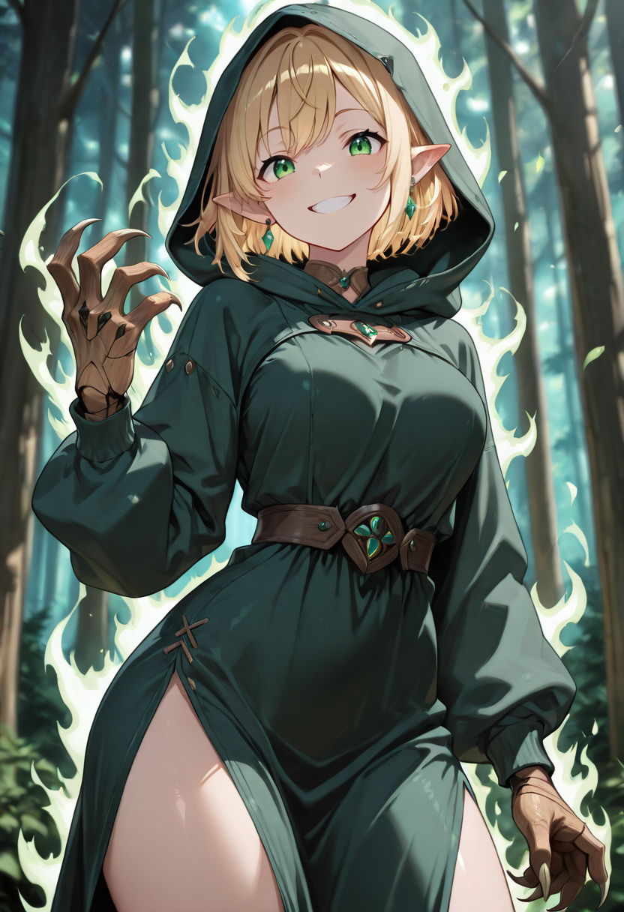
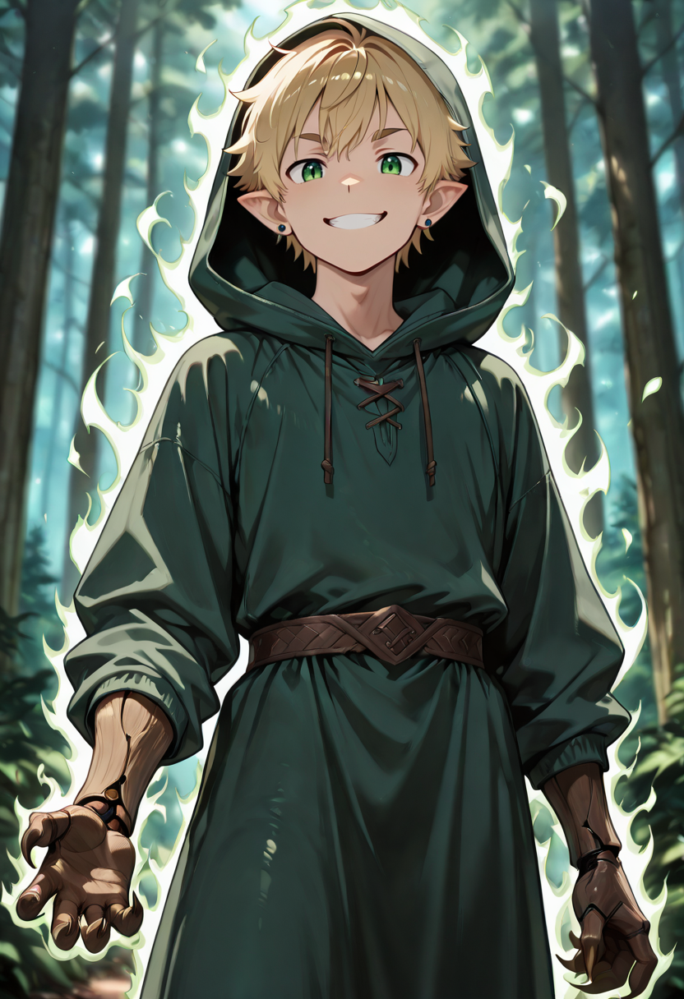
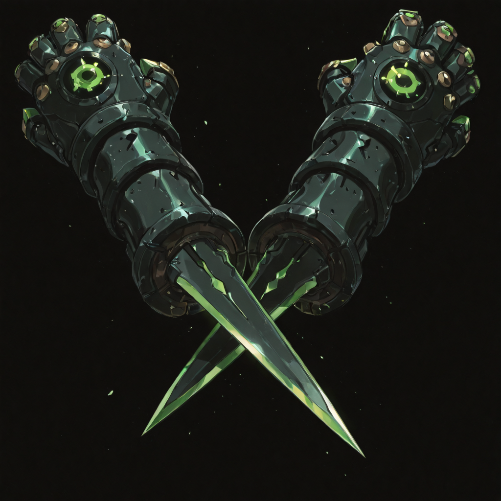
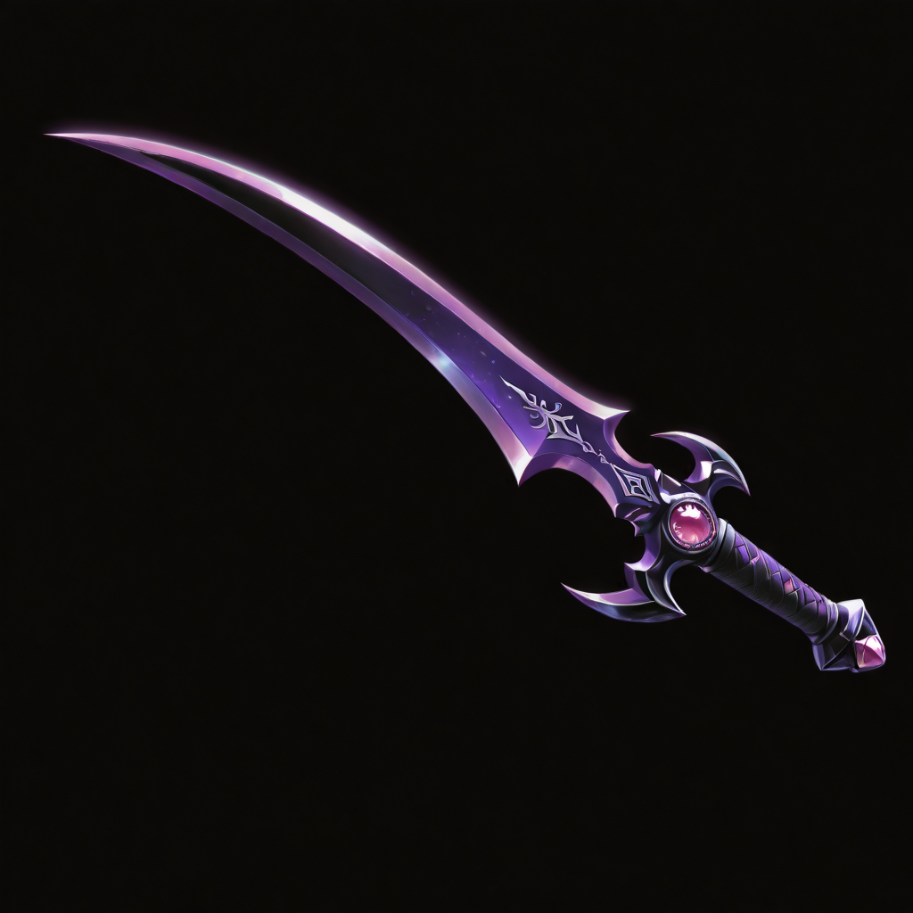
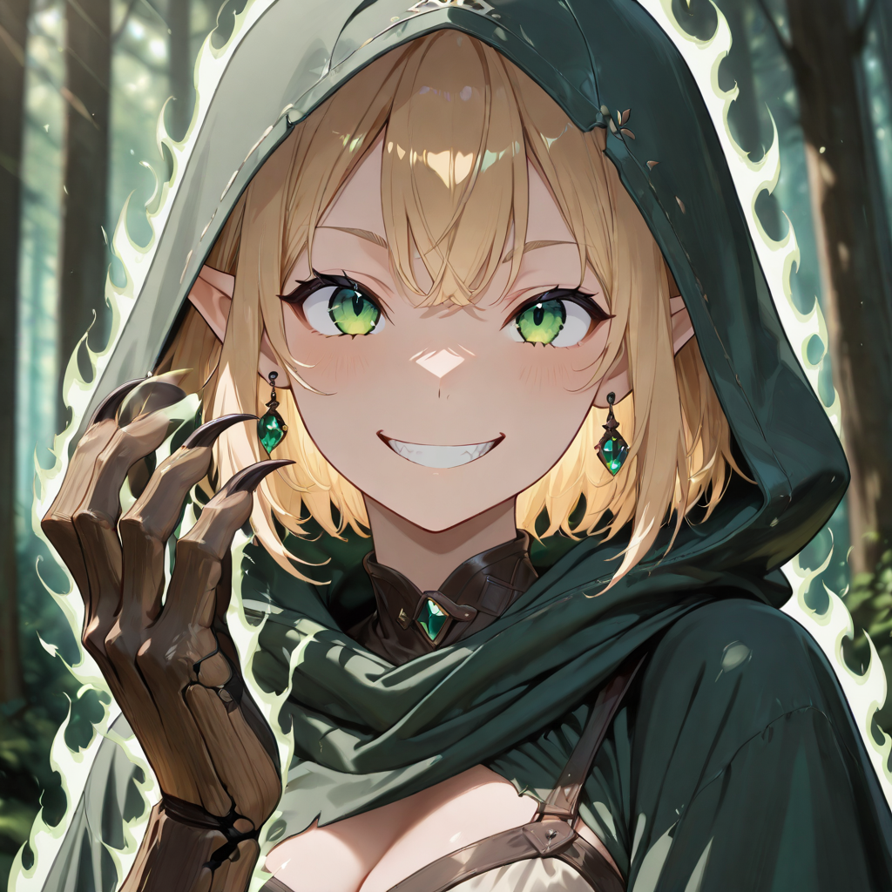

They Remember Everything
The Bladeclaw has finally remembered. The fragments that the Duskblade chased and the Thornwalker nearly grasped have now assembled into a complete picture: a name, a life, a people, a forest. They know who they are. And they have chosen to remain.
This is the moment many expected them to leave , to reclaim their living identity and walk away from the Empire. But that is not what happens. What happens is that the recovered memory becomes fuel, and the fuel becomes absolute commitment. They fight not because they have forgotten who they were, but because they have remembered what was done to their people.
Their claws replaced blades naturally, a biological response to the emotional clarity of recovered identity. In combat, they move with a grace that tactical reports describe as "inconsistent with the medium of conflict" , they simply should not be able to move like that in a battlefield. But elves were never bound by what should be possible. And the Bladeclaw carries all of that heritage forward into every engagement, extending a shadow that protects those fighting alongside them.
Tactical Data

Claw Slash
Base Attack
Stealth Attack
Active SkillShadow Field
PassiveGallery
